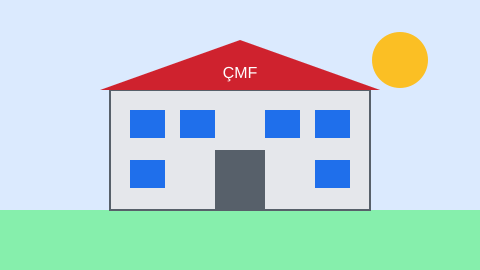

Aşağıdaki görsel sayfanın alt kısmında yer aldığı için tembel yükleme
(loading="lazy") ile istenir; kullanıcı o noktaya yaklaşınca indirilir.
width ve height
nitelikleriyle küçültülmüş hâli.Bozuk yol örneği (alt metin görünür):